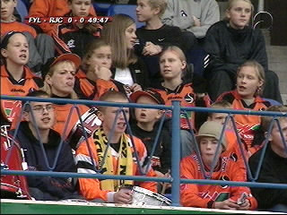

|
Fylkir - Roda JC 1-3 25 september 2001 |
Het vrijwel lege stadion werd voornamelijk bevolkt door
schoolkinderen en een dozijn meegereisde Rodasupporters.
Smerige overtreding van Van der Luer.
Bert Schaap uit Huizen was er ook weer bij.

De drummer van de Fylkir-rakkers heeft zowaar
een Roda-sjaal om.
Vreugde bij Johanesson die in de 57e minuut de
1-0 scoort voor Fylkir.
Na de gelijkmaker van Zafarin, scoorde Berglund
1-2 waarna Anastasiou de wedstrijd besliste met
een laat doelpunt. Eindstand 1-3.
©KPD